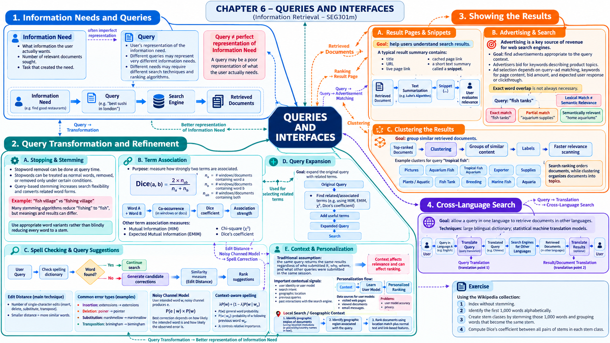

Tài liệu gốc: Slide bài giảng SEG301m Chương 6, "Queries and Interfaces" (19 slide)
Cách đọc: Chương này theo dõi toàn bộ hành trình tương tác: từ điều người dùng thực sự muốn biết, câu truy vấn họ gõ vào, các khâu tự động hoàn thiện truy vấn, cách hiển thị kết quả tìm kiếm, đến phản hồi thực tế của người dùng. Một tình huống thực tế xuyên suốt được sử dụng: "Tìm kiếm laptop mỏng nhẹ phục vụ học tập cho sinh viên".
Mục tiêu của chương
Sau khi học xong chương này, bạn có thể giải thích và thực hiện các nội dung sau:
- Trình bày lý do vì sao nhu cầu thông tin (information need) và câu truy vấn (query) không đồng nhất với nhau.
- Phân biệt rõ chuẩn hóa (normalization), sửa lỗi chính tả (spelling correction), gợi ý truy vấn (query suggestion), mở rộng truy vấn (query expansion) và phản hồi độ liên quan (relevance feedback).
- Thực hiện các phép tính cơ bản về khoảng cách chỉnh sửa (edit distance), mô hình kênh nhiễu (noisy channel model) và hệ số Dice.
- Giải thích vai trò của tiêu đề, URL, đoạn trích tóm tắt (snippet), vùng từ khóa nổi bật (highlighting) và phân cụm kết quả giúp người dùng phán đoán tài liệu.
- Nêu rõ luồng hoạt động và giới hạn của tìm kiếm xuyên ngôn ngữ (cross-language search) khi ngôn ngữ truy vấn khác với ngôn ngữ tài liệu.
SLIDE NGUỒN 1-3

Kiến thức cần chuẩn bị
- Các kỹ thuật chuẩn hóa, loại bỏ từ dừng và rút gọn gốc từ ở Chương 4 không chỉ áp dụng cho tài liệu mà áp dụng cho cả câu truy vấn.
- Chỉ mục đảo ở Chương 5 chịu trách nhiệm tìm các tài liệu ứng viên từ các từ truy vấn.
- Điểm số xếp hạng cao không đảm bảo chắc chắn rằng truy vấn đã thể hiện đầy đủ nhu cầu thực sự của người dùng.
- Hành vi nhấp chuột (click) và thời gian xem trang (dwell time) là tín hiệu hành vi, không phải nhãn độ liên quan tuyệt đối.
Vị trí trong hệ thống tìm kiếm
Nhu cầu thông tin (Information need)
↓ Diễn đạt thành từ ngữ
Truy vấn ban đầu (Initial query)
↓ Chuẩn hóa, sửa lỗi, mở rộng, khai thác ngữ cảnh
Truy vấn thực thi (Executed query)
↓ Tra cứu chỉ mục và xếp hạng
Kết quả tìm kiếm
↓ Tiêu đề, URL, đoạn trích tóm tắt, cụm kết quả
Phán đoán của người dùng
↓ Đánh giá tường minh, nhấp chuột, tìm lại
Truy vấn tiếp theo hoặc Vòng lặp phản hồi
Chương này tập trung vào ranh giới tương tác giữa con người và công cụ tìm kiếm. Chương 7 tiếp theo sẽ nghiên cứu các mô hình toán học tính điểm từ truy vấn thực thi và tài liệu.
6.1 Nhu cầu thông tin và truy vấn
SLIDE NGUỒN 4
Nhu cầu thông tin (information need) là mục tiêu mà người dùng muốn đạt được trong thực tế, còn truy vấn (query) là chuỗi ký tự cụ thể mà người dùng nhập vào hệ thống tìm kiếm.
Ví dụ xuyên suốt: Nhu cầu thực tế của sinh viên:
- Phục vụ học các môn lập trình tại trường đại học.
- Trọng lượng nhẹ dưới 1.3 kg để tiện mang đi lại.
- Thời lượng pin thực tế đạt khoảng 10 tiếng liên tục.
- Ngân sách tối đa trong khoảng 15 đến 20 triệu đồng.
- Cần mua máy mới chính hãng, không mua máy cũ.
Nếu người dùng chỉ gõ truy vấn laptop sinh vien, toàn bộ các tiêu chí về trọng lượng, thời lượng pin, mức giá, địa điểm và tình trạng máy hoàn toàn bị bỏ sót. Câu truy vấn chỉ phản ánh một phần rất nhỏ nhu cầu thông tin thực sự.
Nhu cầu thông tin cũng quyết định số lượng tài liệu cần tìm. Nếu chỉ cần "xem cấu hình khuyến nghị của trường", người dùng chỉ cần một kết quả chính xác duy nhất. Nhưng nếu muốn "so sánh các dòng máy phù hợp", người dùng cần nhiều kết quả đa chiều. Cùng một từ khóa nhưng mục đích tác vụ khác nhau sẽ đòi hỏi chiến lược tìm kiếm và xếp hạng khác nhau.
| Tầng thông tin | Ví dụ cụ thể | Hệ thống có thể quan sát trực tiếp? |
|---|---|---|
| Nhu cầu thông tin | Cần máy nhẹ, pin trâu, vừa túi tiền cho sinh viên CNTT | Không thể quan sát trực tiếp |
| Câu truy vấn | laptop sinh vien |
Quan sát trực tiếp được |
| Ngữ cảnh | Vị trí tại Việt Nam, vừa tìm kiếm yeu cau phan mem python |
Một phần (nếu được cấp quyền lưu vết) |
| Hành vi tương tác | Bấm mở trang, quay lại, gõ thêm từ khóa lọc | Quan sát được hành vi nhưng ý nghĩa có thể mơ hồ |
Xem đáp án gợi ý
Vì một người có thể đang tìm ngôn ngữ lập trình Python phục vụ việc học, còn người kia có thể đang tìm loài trăn (python) phục vụ môn sinh học. Chuỗi ký tự bề mặt không thể hiện trọn vẹn nhu cầu thông tin nếu không có thêm ngữ cảnh như lịch sử tìm kiếm gần nhất, chuyên mục lựa chọn hay vị trí địa lý.
6.2 Chuyển đổi và cải thiện truy vấn
SLIDE NGUỒN 5-11
Phân biệt rõ các kỹ thuật xử lý truy vấn
| Kỹ thuật | Đầu vào | Thao tác của hệ thống | Ví dụ đầu ra | Rủi ro chính |
|---|---|---|---|---|
| Chuẩn hóa (Normalization) | Truy vấn có định dạng khác biệt | Đồng nhất chữ hoa/thường, dấu cách, mã Unicode | Laptop Sinh Vien → laptop sinh vien |
Vô tình xóa mất ký tự phân biệt quan trọng |
| Sửa lỗi chính tả (Spelling correction) | Từ bị nghi ngờ gõ sai | Dùng từ điển, khoảng cách sửa đổi, xác suất để sửa | lapotp → laptop |
Sửa nhầm tên riêng hoặc thuật ngữ hiếm |
| Gợi ý truy vấn (Query suggestion) | Truy vấn hiện tại hoặc ký tự đang gõ dở | Đề xuất các câu truy vấn hoàn chỉnh từ nhật ký tìm kiếm | laptop sinh vien → laptop sinh vien pin trau |
Bị thiên lệch theo các từ khóa quá phổ biến |
| Mở rộng truy vấn (Query expansion) | Mở rộng ngữ nghĩa truy vấn | Tự động thêm từ đồng nghĩa, từ liên quan | laptop + may tinh xach tay |
Trôi truy vấn (query drift) sang nghĩa khác |
| Phản hồi độ liên quan (Relevance feedback) | Phản hồi của người dùng | Cập nhật trọng số từ dựa trên tài liệu được chọn | Bổ sung từ mong nhe từ bài viết được khen |
Người dùng chọn nhầm tài liệu không phù hợp |
Xử lý Stopword và Stemming tại thời điểm truy vấn
Thay vì xóa cứng từ dừng ngay từ khâu lập chỉ mục, nhiều hệ thống hiện đại giữ lại toàn bộ từ trong chỉ mục và chỉ xử lý từ dừng linh hoạt tại thời điểm người dùng truy vấn. Điều này giúp hệ thống không làm mất ngữ nghĩa của các tên riêng như The Who hay câu nói nổi tiếng to be or not to be.
Rút gọn gốc từ tại thời điểm truy vấn (query-based stemming) giúp mở rộng linh hoạt biến thể từ khi cần. Tuy nhiên, hai cụm từ fish village (làng cá) và fishing village (làng chài đánh cá) có nét nghĩa khác nhau; nếu tự động ép cả hai về fish thì kết quả sẽ bị lẫn lộn. Đôi khi việc giữ nguyên từ gốc và đề xuất biến thể dưới dạng từ khóa gợi ý sẽ an toàn hơn việc tự động thay thế ngầm.
Đếm khoảng cách chỉnh sửa (Edit Distance)
Khoảng cách Levenshtein là số lượng thao tác tối thiểu gồm chèn (insertion), xóa (deletion) và thay thế (substitution) để biến chuỗi này thành chuỗi kia. Nếu coi phép hoán vị hai ký tự liền kề (transposition) là 1 thao tác duy nhất thì đó là khoảng cách Damerau–Levenshtein.
Ví dụ minh họa: Sửa từ lapotp thành laptop:
lapotp
└─ Hoán vị chữ 'o' ở vị trí 4 và chữ 't' ở vị trí 5
laptop
- Theo Damerau–Levenshtein (cho phép hoán vị): Khoảng cách là 1 thao tác.
- Theo Levenshtein tiêu chuẩn: Phải thay
o → trồi thayt → o, khoảng cách là 2 thao tác thay thế.
Phân tích các ví dụ trên Slide 7 theo khoảng cách Levenshtein tiêu chuẩn:
| Từ gõ sai → Từ đúng | Khoảng cách Levenshtein chuẩn | Ghi chú thao tác |
|---|---|---|
extenssions → extensions |
1 | Xóa bỏ 1 ký tự s thừa |
poiner → pointer |
1 | Chèn thêm ký tự t |
marshmellow → marshmallow |
1 | Thay thế ký tự e thành a |
brimingham → birmingham |
2 | Levenshtein chuẩn tốn 2 phép thay thế (hoán vị tính là 1) |
Xếp hạng gợi ý sửa lỗi bằng mô hình kênh nhiễu (Noisy Channel Model)
Gọi từ bị gõ sai quan sát được là e (error), từ đúng trong suy nghĩ người dùng là w (word). Slide 8 xếp hạng các từ ứng viên theo tích xác suất:
P(e | w): mô hình lỗi (error model), xác suất người dùng gõ thànhekhi trong đầu định gõ từw(phụ thuộc vào khoảng cách trên bàn phím).P(w): mô hình ngôn ngữ (language model), xác suất xuất hiện tự nhiên của từwtrong văn bản đời thực.
Ví dụ giả định: Người dùng gõ từ batery, hai ứng viên sửa lỗi là battery (pin) và bakery (tiệm bánh):
| Ứng viên w | P(e | w) | P(w) | Tích xác suất |
|---|---|---|---|
battery |
0.08 | 0.004 | 0.00032 |
bakery |
0.01 | 0.002 | 0.00002 |
Mặc dù cả hai từ đều chỉ cách batery một thao tác gõ phím, ứng viên battery có xác suất gõ nhầm cao hơn và tần số phổ biến hơn nên đạt điểm vượt trội và được chọn làm gợi ý hàng đầu.
Nếu xét thêm từ đứng ngay trước đó w_p, hệ thống nội suy giữa tần số chung và xác suất ngữ cảnh:
Trong cụm từ laptop batery, xác suất có điều kiện P(battery | laptop) cực kỳ cao, củng cố vững chắc cho việc chọn từ battery.
Độ đo liên kết từ và Mở rộng truy vấn (Term Association)
Cửa sổ (window) là một đơn vị văn bản được ấn định để đếm sự đồng xuất hiện của các từ. Cửa sổ có thể là một đoạn gồm số từ nhất định hoặc trọn vẹn một tài liệu. Trong ví dụ minh họa dưới đây, 1 tài liệu được coi là 1 cửa sổ:
N: tổng số lượng tài liệu/cửa sổ xem xét (N = 100).n_a: số lượng cửa sổ có chứa từa(n_a = 40).n_b: số lượng cửa sổ có chứa từb(n_b = 30).n_ab: số lượng cửa sổ chứa đồng thời cả hai từavàb(n_ab = 18).
Hệ số Dice tiêu chuẩn:
Với số liệu trên: Dice = 2(18) / (40 + 30) = 36 / 70 ≈ 0.514. Hệ số càng lớn chứng tỏ mức độ bao phủ trùng nhau giữa hai từ càng cao.
Nếu hai từ xuất hiện hoàn toàn độc lập ngẫu nhiên với nhau, số lượng cửa sổ đồng xuất hiện kỳ vọng là:
Thực tế hai từ cùng xuất hiện 18 lần, vượt hơn mức kỳ vọng ngẫu nhiên 6 lần. Bảng so sánh các độ đo liên kết trong Slide 9 (áp dụng logarit tự nhiên ln):
| Độ đo liên kết | Công thức trong slide | Kết quả tính toán | Ý nghĩa bản chất |
|---|---|---|---|
| Mutual Information Measure (MIM) | n_ab / (n_a n_b) |
18 / (40 × 30) = 0.015 |
Tỉ lệ đồng xuất hiện chia cho tích độ phổ biến riêng |
| Expected Mutual Information (EMIM) | n_ab ln(N n_ab / (n_a n_b)) |
18 ln(100 × 18 / 1200) = 18 ln(1.5) ≈ 7.298 |
Độ lệch so với kỳ vọng độc lập có trọng số bởi tần số thực |
| Chi-square (Dạng rút gọn trong slide) | (n_ab − n_a n_b/N)² / (n_a n_b) |
(18 − 12)² / 1200 = 36 / 1200 = 0.030 |
Đo độ lệch bình phương so với kỳ vọng ngẫu nhiên |
| Hệ số Dice | 2n_ab / (n_a + n_b) |
36 / 70 ≈ 0.514 |
Đo mức độ trùng lặp tập hợp giữa hai từ |
Vì các thang đo có khoảng giá trị khác nhau, không thể so sánh trực tiếp con số 0.015 của MIM với 7.298 của EMIM để đánh giá bên nào tốt hơn; điều quan trọng là dùng cùng một thang đo để so sánh thứ tự giữa các từ ứng viên.
Xem đáp án gợi ý
Khi n_ab = 12, ta có N n_ab / (n_a n_b) = (100 × 12) / 1200 = 1. Vì ln(1) = 0, giá trị EMIM bằng 12 × 0 = 0. Với Chi-square, tử số là (12 - 12)² = 0 nên kết quả cũng bằng 0. Điều này cho thấy sự đồng xuất hiện thực tế hoàn toàn trùng khớp với phân bố ngẫu nhiên độc lập.
Trong mở rộng truy vấn (query expansion), hệ thống có thể thêm các từ liên quan như may tinh xach tay, mong nhe, pin trau vào truy vấn laptop sinh vien. Tuy nhiên, nếu mở rộng không kiểm soát sẽ gây ra hiện tượng trôi truy vấn (query drift), ví dụ từ laptop bị kéo sang linh kiện bàn phím hoặc sinh vien bị kéo sang chủ đề vay vốn học sinh.
Ba hình thức phản hồi độ liên quan (Relevance Feedback)
| Hình thức | Nguồn tín hiệu | Ví dụ | Ưu và nhược điểm |
|---|---|---|---|
| Phản hồi tường minh (Explicit feedback) | Người dùng chủ động đánh giá | Bấm nút "Bài viết này hữu ích" | Độ chính xác rất cao nhưng làm phiền người dùng |
| Phản hồi ngầm định (Implicit feedback) | Hành vi tự nhiên của người dùng | Bấm nhấp, cuộn xem, lưu bài viết | Dễ thu thập quy mô lớn nhưng dễ bị nhiễu và thiên lệch vị trí |
| Phản hồi giả định (Pseudo-relevance feedback) | Tự động coi top kết quả đầu là đúng | Lấy các từ xuất hiện nhiều trong top 5 | Không cần người dùng can thiệp nhưng dễ trôi truy vấn nếu top đầu sai |
Hành vi nhấp chuột thể hiện người dùng có chú ý đến tiêu đề, nhưng không khẳng định là nội dung bên trong thực sự đáp ứng nhu cầu. Người dùng có thể nhấp nhầm, nhấp vì vị trí hiển thị ở trên cùng (position bias), hoặc ngược lại không nhấp vì đã đọc được câu trả lời ngay trên đoạn trích snippet.
Ngữ cảnh và Cá nhân hóa (Personalization)
Cùng một câu truy vấn nhưng kết quả hữu ích nhất sẽ khác nhau tùy thuộc vào ai đang tìm, tìm ở đâu, vào thời điểm nào. Tìm kiếm địa phương (local search) kết hợp vị trí người dùng với vị trí tài liệu để ưu tiên các dịch vụ ở gần.
Việc cá nhân hóa kết quả tìm kiếm dựa trên lịch sử tương tác đem lại sự tiện lợi, nhưng cũng đặt ra những thách thức lớn về quyền riêng tư và nguy cơ tạo ra "bong bóng bộ lọc" (filter bubble) cô lập người dùng trong các thông tin quen thuộc một chiều.
6.3 Hiển thị kết quả tìm kiếm
SLIDE NGUỒN 12-16
Trang kết quả và Đoạn trích tóm tắt (Snippet)
Trang kết quả tìm kiếm (Search Engine Results Page - SERP) là giao diện tương tác then chốt, nơi người dùng đưa ra quyết định có bấm vào xem tiếp tài liệu hay không:
| Thành phần | Vai trò chính | Điểm cần lưu ý |
|---|---|---|
| Tiêu đề (Title) | Nêu bật chủ đề chính hoặc tên trang | Tiêu đề giật gân có thể không khớp nội dung thực |
| URL / Tên miền | Cho biết nguồn gốc và cấp bậc thư mục | Cần kiểm tra độ uy tín của tên miền |
| Đoạn trích (Snippet) | Trích xuất ngắn chứa từ khóa truy vấn | Không phải là bản tóm tắt toàn bộ tài liệu |
| Làm nổi bật (Highlight) | In đậm các từ khớp với truy vấn | Xuất hiện nhiều từ chưa chắc nội dung đã hay |
| Bản sao lưu (Cached link) | Xem bản lưu trữ tại thời điểm lập chỉ mục | Dữ liệu có thể khác biệt so với trang thực tế hiện tại |
Ví dụ minh họa: Xét tài liệu giới thiệu mẫu máy tính:
Model A is designed for university programming courses.
It weighs 1.18 kg and has a 13-hour measured battery life.
The current price is 118,000 yen, including the student warranty.
- Với truy vấn
lightweight student laptop, đoạn trích tối ưu cần nhấn mạnh yếu tố trọng lượng và chính sách sinh viên:
Model A is designed for university programming courses. It weighs 1.18 kg ... including the student warranty.
- Nhưng với truy vấn
laptop battery life, chính tài liệu đó nên hiển thị đoạn trích khác tập trung vào thời lượng pin:
It weighs 1.18 kg and has a 13-hour measured battery life.
Đoạn trích phụ thuộc truy vấn (query-biased snippet) linh hoạt thay đổi trích đoạn theo từng câu hỏi của người dùng, khác hoàn toàn với bản tóm tắt tĩnh cố định của tài liệu.
Thuật toán Luhn trong tạo đoạn trích
Slide 13 đề cập đến thuật toán Luhn. Tư tưởng cốt lõi của Luhn là chấm điểm cao cho các câu văn có mật độ tập trung dày đặc các từ khóa quan trọng (bỏ qua các từ dừng phổ biến). Điểm số cụm từ khóa thường được tính bằng tỉ lệ (số từ quan trọng)² / khoảng cách từ.
Một câu văn ngắn chứa đồng thời cả pin và 10 tiếng sẽ có điểm Luhn cao hơn hẳn việc hai từ này nằm rời rạc ở hai đoạn văn xa nhau.
Quảng cáo và Tìm kiếm
Quảng cáo là nguồn doanh thu chủ yếu của các công cụ tìm kiếm thương mại. Hệ thống ghép nối câu truy vấn ngắn của người dùng với các mẫu quảng cáo do nhà quảng cáo đấu thầu từ khóa và trang đích.
Ví dụ ở Slide 15 với truy vấn fish tanks, hệ thống không chỉ hiển thị quảng cáo khớp chính xác từ khóa mà còn đưa ra các quảng cáo liên quan về ngữ nghĩa như Aquariums hay Pet Supplies. Điều tối quan trọng trong thiết kế giao diện là phải gắn nhãn rõ ràng để người dùng phân biệt rạch ròi giữa kết quả tự nhiên (organic results) và kết quả quảng cáo trả phí (paid ads).
Phân cụm kết quả tìm kiếm (Result Clustering)
Phân cụm kết quả tự động gom các trang web ở top đầu thành các nhóm chủ đề để người dùng dễ dàng định hướng. Ví dụ với từ khóa đa nghĩa tropical fish, hệ thống có thể chia kết quả thành các cụm: Cá cảnh thủy cung, Bể nuôi cá, Kỹ thuật nhân giống, Cá biển nhiệt đới.
Khác với bộ lọc (filter) vốn dựa trên các trường thuộc tính có sẵn (như mức giá, năm sản xuất), phân cụm khám phá các nhóm chủ đề tiềm ẩn dựa trên độ tương đồng nội dung văn bản giữa các tài liệu.
Xem đáp án gợi ý
Chưa chắc chắn. Một trang web rác nhồi nhét từ khóa hoặc một bài viết chứa các câu văn phủ định (ví dụ: "chúng tôi không bán laptop cho sinh viên") vẫn có thể xuất hiện dày đặc từ khóa. Đoạn trích chỉ giúp người dùng nắm bắt ngữ cảnh xuất hiện, cần kết hợp với độ uy tín của nguồn và toàn văn bài viết để đánh giá.
6.4 Tìm kiếm xuyên ngôn ngữ (Cross-Language Search)
SLIDE NGUỒN 17
Tìm kiếm xuyên ngôn ngữ (cross-language search - CLIR) là bài toán trong đó ngôn ngữ của câu truy vấn khác với ngôn ngữ của các tài liệu trong kho lưu trữ (ví dụ người dùng gõ tiếng Việt nhưng tìm tài liệu tiếng Anh hoặc tiếng Nhật).
Quy trình xử lý tiêu biểu:
Truy vấn ngôn ngữ gốc (Tiếng Việt)
↓ Dịch câu truy vấn (Query translation)
Truy vấn ngôn ngữ đích (Tiếng Anh)
↓ Tìm kiếm trên chỉ mục tiếng Anh
Tài liệu kết quả tiếng Anh
↓ Dịch tài liệu (Tùy chọn)
Hiển thị kết quả bằng tiếng Việt cho người dùng
Ví dụ minh họa: Người dùng gõ truy vấn laptop mong nhe cho sinh vien. Hệ thống dịch sang tiếng Anh thành lightweight laptop for students và tiến hành tra cứu.
Việc dịch từng từ đơn lẻ theo từ điển cơ học thường gặp nhiều bẫy:
- Từ
nhẹcó thể là nhẹ về trọng lượng (lightweight), nhưng cũng có thể là nhẹ về mức độ (mild/light intensity). - Các tên riêng, thương hiệu hoặc mã model phần cứng (như
ThinkPad,MacBook Air M2) cần được giữ nguyên, không được dịch bừa bãi.
| Phương pháp | Ưu điểm | Hạn chế |
|---|---|---|
| Dịch câu truy vấn | Câu truy vấn ngắn nên tốc độ dịch cực nhanh | Truy vấn ngắn thiếu ngữ cảnh, dễ dịch sai nghĩa |
| Dịch toàn bộ tài liệu | Tạo được chỉ mục bằng ngôn ngữ của người dùng | Chi phí dịch thuật và lưu trữ toàn bộ kho dữ liệu quá lớn |
| Dùng từ điển song ngữ | Dễ cài đặt, tốc độ tra cứu tức thì | Kém cỏi trước từ đa nghĩa, cụm từ và từ vựng mới |
| Mô hình dịch thống kê | Khai thác được xác suất ngữ cảnh và đa ứng viên | Phụ thuộc nặng nề vào chất lượng ngữ liệu huấn luyện |
Xem đáp án gợi ý
Vì từ jaguar trong tiếng Anh vừa có nghĩa là loài thú săn mồi (báo đốm), vừa là thương hiệu xe hơi hạng sang Jaguar. Nếu không có thêm từ khóa ngữ cảnh về thế giới động vật học hoặc phân loại chuyên mục, hệ thống sẽ trả về lẫn lộn thông số tốc độ của xe hơi và vận tốc chạy của loài báo.
Bài tập cuối chương
SLIDE NGUỒN 18
Bài tập 1: Bài tập gốc trong slide 18
Sử dụng kho ngữ liệu văn bản Wikipedia để lập kế hoạch thực nghiệm:
- Xây dựng chỉ mục không áp dụng rút gọn gốc từ (stemming).
- Lấy ra 1.000 từ đầu tiên theo thứ tự từ điển.
- Áp dụng thuật toán stemmer cho 1.000 từ đó, gom các từ có cùng gốc thành các nhóm lớp (stem classes).
- Tính toán hệ số Dice cho từng cặp từ trong cùng một nhóm lớp.
Xem hướng dẫn giải
Định nghĩa rõ quy tắc tách từ và chuẩn hóa chữ thường. Lưu trữ danh sách tài liệu xuất hiện của từng từ. Với hai từ a và b cùng chia sẻ một gốc từ, đếm số tài liệu chung n_ab và tính 2n_ab / (n_a + n_b). Các cặp từ có hệ số Dice rất thấp cho thấy mặc dù hình thái giống nhau nhưng ngữ cảnh sử dụng thực tế lại rất khác biệt.
Bài tập 2: Thiết kế chuỗi xử lý hoàn thiện truy vấn
Với truy vấn đầu vào bị lỗi studnet lapotp batery, hãy thiết kế chuỗi xử lý qua các bước: chuẩn hóa, sửa lỗi chính tả, gợi ý truy vấn và mở rộng truy vấn. Nêu rõ các rủi ro có thể làm sai lệch ý định ban đầu ở từng bước.
Xem đáp án gợi ý
- Sau bước sửa lỗi chính tả:
student laptop battery. - Sau bước gợi ý truy vấn: Đề xuất thêm
student laptop battery lifehoặcstudent laptop battery replacement. - Sau bước mở rộng truy vấn: Bổ sung thêm các từ
notebook,pin,sac. - Rủi ro: Nếu người dùng đang muốn tìm cách thay pin bị hỏng mà hệ thống lại tự ý mở rộng sang việc mua máy mới mỏng nhẹ, hoặc từ
notebookbị hiểu nhầm sang vở ghi chép học sinh, kết quả tìm kiếm sẽ đi chệch hoàn toàn khỏi mục đích ban đầu. Vì vậy, các bước mở rộng ngữ nghĩa nên hiển thị dưới dạng gợi ý để người dùng chủ động lựa chọn thay vì tự động ép buộc.
Bài tập 3: Lựa chọn hình thức hiển thị cho truy vấn so sánh giá
Đối với truy vấn so sánh giá máy tính của người dùng, hãy giải thích cách kết hợp giữa đoạn trích tóm tắt (snippet), bộ lọc (filter) và phân cụm kết quả (cluster).
Xem đáp án gợi ý
Bộ lọc theo các thuộc tính có cấu trúc (mức giá từ 15-20 triệu, RAM 16GB, trọng lượng < 1.3kg) giúp người dùng thu hẹp chính xác phạm vi sản phẩm mong muốn. Phân cụm kết quả giúp nhóm các dòng máy theo thương hiệu hoặc mục đích sử dụng (máy văn phòng, máy lập trình, máy đồ họa). Đoạn trích snippet hiển thị chính xác dòng văn bản ghi nhận mức giá khuyến mãi và chính sách bảo hành sinh viên để người dùng đối chiếu trước khi bấm vào trang bán hàng.
Tổng kết
SLIDE NGUỒN 19
- Nhu cầu thông tin là mục tiêu trong nhận thức của người dùng, còn câu truy vấn chỉ là sự thể hiện ngắn gọn và thường không hoàn hảo của nhu cầu đó.
- Chuẩn hóa, sửa lỗi chính tả, gợi ý truy vấn, mở rộng truy vấn và phản hồi độ liên quan là các kỹ thuật có mục tiêu và cơ chế vận hành khác biệt.
- Khoảng cách chỉnh sửa đo lường sai lệch chữ viết bề mặt; mô hình kênh nhiễu kết hợp xác suất gõ nhầm với xác suất ngôn ngữ tự nhiên để xếp hạng từ sửa lỗi.
- Mở rộng truy vấn và phản hồi độ liên quan giúp khắc phục sự bất đồng từ vựng, nhưng phải kiểm soát hiện tượng trôi truy vấn.
- Tiêu đề, URL, đoạn trích phụ thuộc truy vấn, vùng in đậm từ khóa và phân cụm kết quả là những thành phần thiết yếu giúp người dùng phán đoán tài liệu.
- Tìm kiếm xuyên ngôn ngữ giải quyết rào cản ngôn ngữ giữa truy vấn và kho tài liệu, đòi hỏi xử lý thấu đáo từ đa nghĩa và tên riêng.
Câu hỏi tự kiểm tra
- Trình bày sự khác biệt giữa nhu cầu thông tin (information need) và câu truy vấn (query).
- Vì sao trong khoảng cách Levenshtein tiêu chuẩn, thao tác hoán vị hai chữ cái kề nhau lại tính là 2 phép biến đổi?
- Phương pháp phản hồi độ liên quan giả định (pseudo-relevance feedback) dựa trên giả định ngầm định nào?
- Điểm khác biệt căn bản giữa đoạn trích phụ thuộc truy vấn (query-biased snippet) và bản tóm tắt tài liệu (summary) là gì?
- Nêu hai lý do vì sao lượt nhấp chuột (click) không thể coi là nhãn khẳng định chắc chắn 100% về độ liên quan của tài liệu.
Xem đáp án gợi ý
- Nhu cầu thông tin là vấn đề người dùng muốn giải quyết trong thực tế; truy vấn là chuỗi từ ngữ cụ thể gõ vào hệ thống để cố gắng diễn đạt nhu cầu đó.
- Vì thuật toán Levenshtein tiêu chuẩn chỉ gồm ba phép toán chèn, xóa và thay thế; muốn đổi chỗ hai ký tự
ot → tobắt buộc phải thực hiện 2 phép thay thế riêng rẽ. - Giả định rằng một số tài liệu đứng ở các vị trí đầu tiên của kết quả tìm kiếm vòng 1 chắc chắn là các tài liệu có độ liên quan đúng đắn.
- Đoạn trích phụ thuộc truy vấn trích lọc linh hoạt các câu văn chứa từ khóa của câu truy vấn hiện tại; bản tóm tắt tài liệu đúc kết nội dung chính của văn bản độc lập với câu truy vấn.
- Thứ nhất, người dùng có thể nhấp chuột do bị thu hút bởi tiêu đề hoặc do thiên lệch vị trí ở trên cùng (position bias) nhưng vào đọc thấy nội dung vô ích; thứ hai, người dùng có thể không nhấp chuột nhưng đã hoàn toàn thỏa mãn vì đọc được ngay thông tin cần tìm trên đoạn trích snippet.
Chuyển tiếp sang chương sau
Sau khi đã hoàn thiện câu truy vấn và cấu trúc giao diện hiển thị, câu hỏi cốt lõi đặt ra là: Thuật toán dựa trên những nguyên lý toán học nào để chấm điểm và quyết định tài liệu nào xứng đáng đứng đầu? Chương 7 tiếp theo sẽ so sánh toàn diện các mô hình truy xuất kinh điển: Boolean, Không gian vector, BM25, Mô hình ngôn ngữ và Học xếp hạng (Learning to Rank).
Bảng thuật ngữ
| English | Tiếng Việt | Ý nghĩa trong chương này |
|---|---|---|
| Information need | Nhu cầu thông tin | Điều người dùng thực sự muốn biết hoặc giải quyết trong thực tế |
| Query | Truy vấn | Chuỗi ký tự, câu hỏi hoặc điều kiện nhập vào hệ thống tìm kiếm |
| Query transformation | Chuyển đổi truy vấn | Quá trình điều chỉnh, chuẩn hóa hoặc mở rộng câu truy vấn |
| Spelling correction | Sửa lỗi chính tả | Kỹ thuật phát hiện và đề xuất từ đúng cho các từ bị gõ sai |
| Edit distance | Khoảng cách chỉnh sửa | Số lượng thao tác tối thiểu để biến đổi chuỗi ký tự này thành chuỗi khác |
| Query suggestion | Gợi ý truy vấn | Tính năng tự động đề xuất các câu truy vấn hoàn chỉnh tiếp theo |
| Query expansion | Mở rộng truy vấn | Kỹ thuật bổ sung các từ đồng nghĩa hoặc liên quan vào truy vấn gốc |
| Query drift | Trôi truy vấn | Hiện tượng các từ mở rộng làm câu truy vấn đi chệch khỏi ý định ban đầu |
| Relevance feedback | Phản hồi độ liên quan | Cơ chế dùng thông tin đánh giá tài liệu để tinh chỉnh lại câu truy vấn |
| Pseudo-relevance feedback | Phản hồi độ liên quan giả định | Tự động coi các kết quả ở top đầu là tài liệu đúng để rút trích từ khóa |
| Noisy channel model | Mô hình kênh nhiễu | Mô hình xác suất kết hợp giữa khả năng gõ lỗi và tần suất ngôn ngữ |
| Dice coefficient | Hệ số Dice | Thước đo mức độ trùng lặp tập hợp đồng xuất hiện giữa hai từ |
| Personalization | Cá nhân hóa | Tùy biến kết quả tìm kiếm theo hồ sơ và sở thích của từng người dùng |
| Snippet | Đoạn trích tóm tắt | Đoạn văn ngắn trích xuất từ tài liệu hiển thị trên trang kết quả |
| Result clustering | Phân cụm kết quả | Tự động gom các kết quả tìm kiếm hàng đầu thành các nhóm chủ đề |
| Cross-language search | Tìm kiếm xuyên ngôn ngữ | Tìm kiếm khi ngôn ngữ câu truy vấn khác với ngôn ngữ của tài liệu |